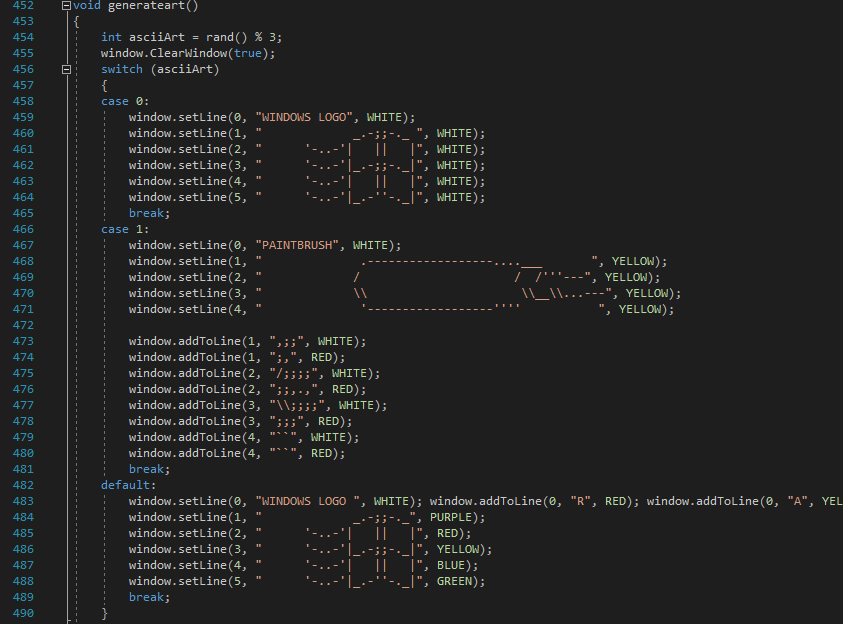

SYDE
This is my progress blog on this game that i decided to make.
last updated : 14/01/2019
Back To Main Page | View Code On Github
last updated : 14/01/2019
Back To Main Page | View Code On Github
Some Notes When Running Source Code
- Add in Preprocessor (_CRT_SECURE_NO_WARNINGS) on all configurations
- in configsettings.sc make xOffset 1 for windows 7, 2 for windows 10
Welcome To SYDE

Welcome To SYDE, a brand new game in development.
I know this blog seems pretty bare bones at the moment, however as the week goes on I plan to update this page a lot. Not only is this new project open source (which means you can download the source code from github and have a play with it), but I'm also going to be updating this page with:
- Tech Documentation
- Design Documentation
- Mock Up Pixel Art
- Story Design
- And Much More!
For the first post though, I'm just going to quickly talk about my plans for this new project and exactly what "SYDE" is. "SYDE" is a short adventure story game (planned gameplay time is approx. 30mins) which runs entirely from the windows terminal. The whole project is made entirely in visual studio, with no external engine used. I will show off more details as this game develops. Until then, you can play a very unfinished prototype.
Love, from Callum 8/01/2019
The SYDE Engine Pt.1

By the end of this tutorial, anyone reading should be able to understand how this picture gets displayed in the terminal. For part 1, I'm going to give a basic run down on the core window creation. Now there's a bit to talk about, so i'm going to get straight into it, starting with the most basic class of the engine.
TextItem.h/TextItem.cpp
The TextItem class can be simply defined as the variable for each pixel in the main window. This variable contains both the text and the colour at that point in the window. There's not much to this class, but to use it is simple:
- use the getters (getChar, getColour) to return the char and colour respectively
- use the '=' to set the TextItem to another TextItem
- initialize with TextItem(text, colour)
The colour is an int variable, which might seem a bit confusing. However, I will go over it in "ConsoleWindow.h/cpp"
Line.h/Line.cpp


The Line class is where we finally start to get this window showing. Each line holds a vector of TextItems, which we can print to the screen one by one. Because it's done this way, we can change the console's colour output to the one stored in the TextItem everytime we print out a character. This class has no other primary function.
ConsoleWindow.h/ConsoleWindow.cpp

First off, the ColourClass. Each Colour in the ColourClass is linked to an integer, starting with 0 (BLACK), and incrementing each time. This allows to initialize the colour in a TextItem with a Colour variable. The key i've done for ColourClass naming is:
[TEXTCOLOR]_[BGCOLOR]_BG
Except for the initial values, which is the name of the text colour, with a default black background.

I'll go a bit more in-depth about functionality in future blog updates, but for now here's a quick run-down:
- Clear Console: Clears the screen, with option to remove all stored text from the window's memory
- Add Text To Line: Append text to a line
- Add Layer To Line: Set text on a line, wherever a blank space is set, it won't erase that text from the console
- Set Line: Change a line in the console
- Clear Line: Erase a line in the console
- Set Text At Point : Using A Vector 2, Changes the text & colour at a specific point in the console
- Get Text Colour At Point : Returns the text colour at a vector 2
- Set Offset : Set the position offset of the window
- Get Line : Returns a line
- Write Console : Prints the window to the terminal
Example Usage:
To try this out download the source code from my github, then comment everything from the main function except the generateArt() function (Make sure it's uncommented)

That's the basic drawing functions of this engine covered. In the next engine update i'll talk about Vector2 and other core gameplay features.
Love, from Callum 9/01/2019
The SYDE Engine Pt.2, Movement, Vector2s & Rigidbodys

In this post I'm going to cover a lot of the core gameplay functionality including:
- Positioning (Vector2)
- Physics (Rigidbody)
- Movement
By the end of this part, I'm going to show the code for drawing the truck (from the beginning of part 1).
Without further ado, let's get started.
Vector2.h/Vector2.cpp

I'll assume most people reading this know about the principles of Vector2, however for those who don't, I'll explain it.

Simply put, a Vector2 is a position x & y, like on a graph. However, since the window's origin is at the top left instead of the bottom left, when we use Vector2 in this engine, the y is inverted.

Inside this class we have the basic setters & getters for the x & y variables. You'll notice that the variables are in float format, however we will be using exclusively whole integers whenever we call this up. This class is not actually complicated at all in it's functionality, so i'll just give a quick run-down.
- Operator+(Vector2 other) - For Vector2 + Vector2 operations (e.g. (2,2) + (1,0) == (3,2))
- Operator-(Vector2 other) - For Vector2 - Vector2 operations (e.g. (2,2) - (1,0) == (1,2))
- Operator*(float other) - For Vector2 * Float operations (e.g. (2,2) * 2 == (4,4))
- Operator=(Vector2 other) - For Vector2 = Vector2 operations (e.g. (VectorA (2,2) = VectorB(4,4), VectorA returns (4,4))
- Operator==(Vector2 other) - Return true if two Vectors are equivalent to each other.
- offset(float other) - Return Vector2(Vector2.x + offset, Vector2.y + offset)
- distance(Vector2 other) - Return the distance between two points in float format.
- WillHit(Vector2 other, Vector2 gravity) - Returns a variable to see if the Vector2 will go past/touch a certain position when gravity is applied. Used in Rigidbodys.
Rigidbody.h/Rigidbody.cpp

Now the rigidbody class might seem scary, until you realise that the majority of the functions here are actually just getters and setters. In fact, there is only one function that we need to have a look at in the whole Rigidbody class! That function of course is the Gravity function.

This is where the WillHit function from the previous class comes into use. The gravity function is simple to explain. We check to see if two rigidbodies are going to hit, if they are, we reduce the speed so that the falling rigidbody does not go through the other rigidbody. If it will not hit anything, then it will continue to fall. We call up the graivty function on a loop in the main gameplay loop.

In this loop, we compare everything in the rigidbody array with each other, applying gravity onto every rigidbody (Assuming it is not tagged as Kinematic). Of course there are a bunch of variables here in which I need to explain the use of. I will come back to this when I talk about GameObjects, as it will be more relevant there.
Movement

This simple little piece of code allows us to determine if a key is pressed during a frame. From here we can access it in the gameplay loop like:

Note: rbArr[0] is the player.
Movement is pretty straight-forward. We move the position of the player to the right if we press 'D', move the position to the left if we press 'A'.
Drawing The Truck
First of note, I'm not going to be showing the whole code, as it can get quite repetitive. I reccomend looking through 'Character.cpp' if you want to view the full code. Instead I'll be focusing on one of the outlines of the truck.

So what we're doing here is setting the text & text colour at certain points of the console window using 'SetTextAtPoint'. Because this truck will be created from more than one position, we need to create it from a origin point that's passed in as a parameter. (The point variable)

In the cutscene loop, we then add this truck to the window to draw, adding to it's X position in each iteration of the loop. It's really just as simple as that! This concludes our quick summary of the SYDE Engine. I will probably go more in-depth to these features as I delve deeper into other gameplay topics. Until then, download the source code and have a play around.
Love, Callum 14-01-2019
SOME SYDE CONCEPT DESIGNS 14-01-2019


Loading Image Files In The Terminal


Here's comes one of the first steps towards making this engine accesible to other people. Image files (well, certain colours, but i'll get to that) can now be loaded into the terminal. The best part, it's as easy to implement as:

The integer variables are respectively (widonwwidth, windowheight ('doesn't need to be consolewindow width or height, just the amount of pixels used to draw the image), bmpwidth, bmpheight (image dimensions)). In a theoritical usage, the variables should be equal to (2x,y,x,y).
Now, as this isn't actually too complicated (but long enough that I need to cover it in it's own post), let's go through exactly how we make this image appear. Note: I used "gdiplus.h" for this.

The only function we will need to worry about here is the get_bmp_as_direct_colour_class_array function. It does use the get_colour_from_rgb function, but all that function does is check to see if the rgb matches pre-determined rgb arrays. As a note though, these are the colour values you must use in your image. If a pixel does not equal one of these colours, that specific pixel will return a nullcolour.

get_bmp_as_direct_colour_class_array

So what's happening here is that the function goes through every pixel in the specificied dimensions, and adds the pixel twice to a colour array (twice because pixel width = 1/2pixelheight). We then return that array so that we can use it in the CustomAsset Class.
CustomAsset


From here we use the SetAsset function to save the ColourArray into a 2d vector of TextItems. Once saved, when can draw it the same way we've been drawing the whole time. (Note: if colour = NULLCOLOUR, we won't bother drawing the pixel and just skip it).
That's all there is too, download the source code and have a go with it. By the way, here's the original image I used to produce the pictures at the start of this post (Scaled to 3x):

The brown is not a recognisable colour, so it doesn't draw any brown pixel.
Love, Callum 17-01-2019
Rigidbodies As A GameObject (In Progress)

In a previous post, I mentioned that I would talk about GameObjects, and how Rigidbodies played a part in it. I'm going to do that now, and hopefully I can go in-depth enough so that anyone reading can get an understanding of what I'm trying to do here. Couple of things of note before I get into this:
- Some of these may not yet be implemented, and will be planned for future engine updates
- There is no GameObject class, and the Rigidbody class is used as the GameObject Class
Without further ado, let's get into it!
isTrap
The isTrap variable is not going to have much usage in the main SYDE game, as this was used back when the game was in a way earlier prototyping stage (back when the game was originally planned to be a 2D platformer, the direction changed a little).
Last Updated, Callum 17-01-2019